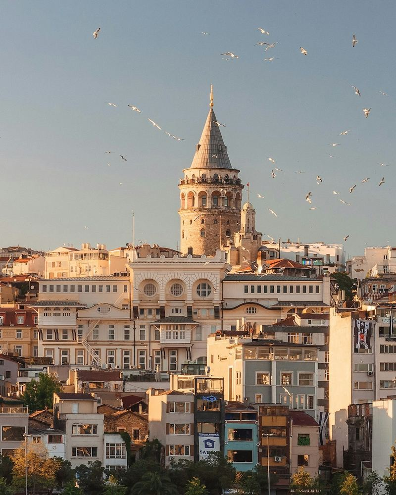
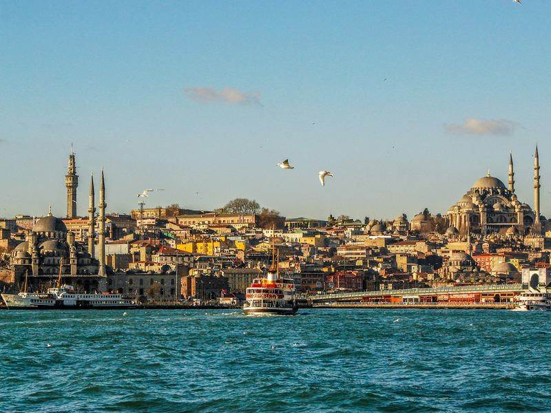
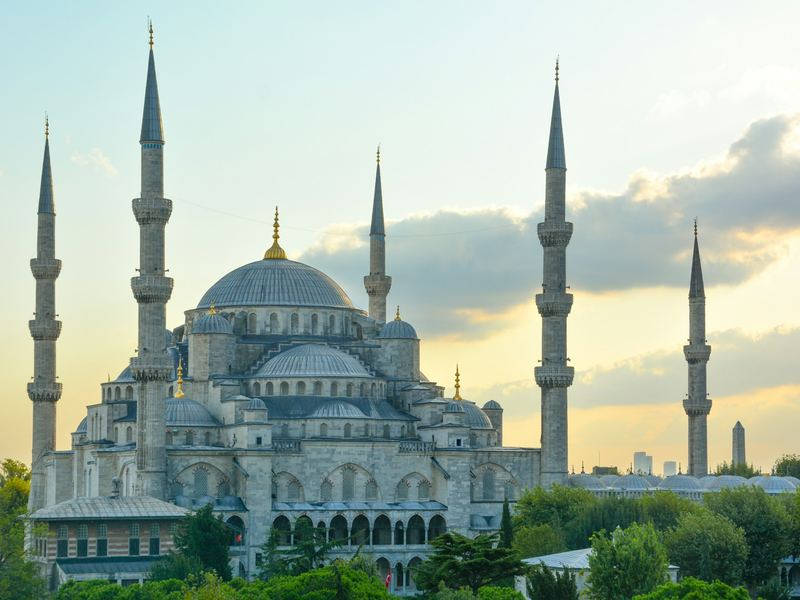
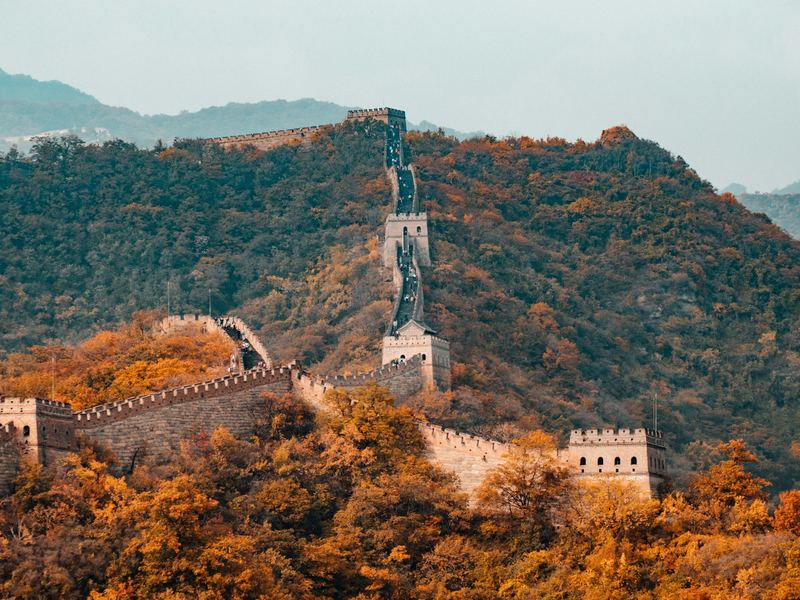
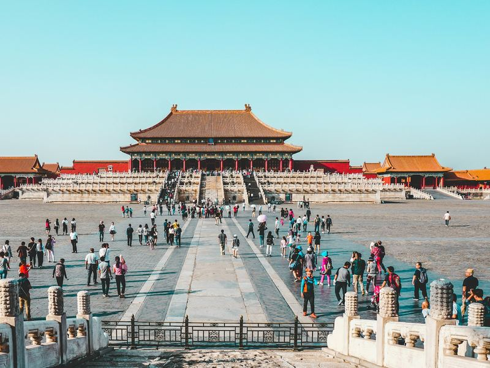

Entre Europe et Asie
Istanbul s'étend sur deux continents, de part et d'autre du Bosphore.
Destinations
La Turquie est aujourd'hui notre destination phare. La Chine ouvre d'autres perspectives, des études aux affaires. Découvrez ce que chacune peut vous offrir, puis parlons de votre projet.

Destination phare
Entre Europe et Asie, la Turquie conjugue patrimoine exceptionnel, large choix d'universités et bon rapport qualité-prix. C'est aujourd'hui notre destination phare, avec une agence de voyage partenaire pour vous accompagner dans vos démarches.



Istanbul s'étend sur deux continents, de part et d'autre du Bosphore.
Istanbul, la Cappadoce, Éphèse, Pamukkale : plusieurs sites sont inscrits au patrimoine mondial de l'UNESCO.
Universités publiques et privées, avec de nombreux cursus enseignés en anglais.
Pour un séjour comme pour la vie étudiante, la Turquie reste une destination au bon rapport qualité-prix.
Circuits, séjours en famille ou en groupe, voyages de découverte : nous vous aidons à choisir la formule adaptée à vos envies et à votre budget.
Choix du programme et de l'université, étapes de candidature, préparation du dossier et estimation du budget étudiant.
Devis, réservations et procédures sont assurés par notre agence de voyage partenaire, présentée avant toute démarche.
Le Bosphore, Sainte-Sophie, la Mosquée bleue et le Grand Bazar.
Cheminées de fées, habitats troglodytes et montgolfières au lever du soleil.
La Riviera turque : plages, montagnes et vieille ville de Kaleiçi.
L'une des cités antiques les mieux conservées de Méditerranée, près d'Izmir.
Terrasses de travertin blanc et vestiges de l'antique Hiérapolis.
Les conditions dépendent de votre nationalité : visa électronique (e-Visa) pour certains voyageurs, demande à l'ambassade pour d'autres. Nous vous orientons ; les conditions officielles font foi.
Méditerranéen sur les côtes, plus contrasté à l'intérieur : étés chauds, hivers frais à Istanbul et froids en Anatolie centrale.
Le turc est la langue officielle ; l'anglais est courant dans les lieux touristiques et dans de nombreux cursus universitaires.
Billets, hébergement, vie sur place : nous vous aidons à estimer un budget réaliste avant de vous engager.
Un projet en Turquie ? Parlons-en.
Destination
Deuxième économie mondiale, la Chine attire de plus en plus d'étudiants et d'entrepreneurs africains. Études, voyages d'affaires ou découverte : nous vous aidons à y voir clair avant de vous lancer.



Deuxième économie mondiale et premier partenaire commercial de nombreux pays africains.
De nombreuses universités accueillent des étudiants internationaux, avec des programmes en chinois et certains cursus en anglais.
La Foire de Canton, à Guangzhou, réunit deux fois par an acheteurs et fournisseurs du monde entier.
Grande Muraille, Cité interdite, gastronomie, calligraphie : un pays immense à découvrir.
Information sur les universités, les programmes et les étapes de candidature, pour construire un projet cohérent.
Orientation pour préparer un déplacement professionnel ou la visite d'un salon.
Pékin, Shanghai et au-delà : des idées de voyage adaptées à vos envies et à votre budget.
La Cité interdite, la place Tian'anmen et la Grande Muraille à proximité.
Le Bund, les gratte-ciel de Pudong et un grand pôle économique.
La ville du commerce, qui accueille la Foire de Canton.
Un pôle technologique aux portes de Hong Kong.
Un visa est généralement nécessaire ; son type dépend de votre projet (études, affaires, tourisme). Nous vous orientons ; les conditions officielles font foi.
Le mandarin domine ; l'anglais est moins répandu hors des grandes villes. Une application de traduction est très utile.
Les paiements mobiles sont omniprésents : mieux vaut s'y préparer avant le départ.
Billets, hébergement, vie sur place : nous vous aidons à estimer un budget réaliste avant de vous engager.
Un projet en Chine ? Parlons-en.
Programme
Le TCF (Test de connaissance du français) est souvent demandé pour étudier en France ou s'installer au Canada. Nous vous orientons vers la bonne version du test et vous informons sur l'inscription et la préparation.

Votre projet
Écrivez-nous sur WhatsApp : un conseiller vous répond et vous oriente vers la bonne porte.
+237 698 99 48 39 · Yaoundé, Cameroun